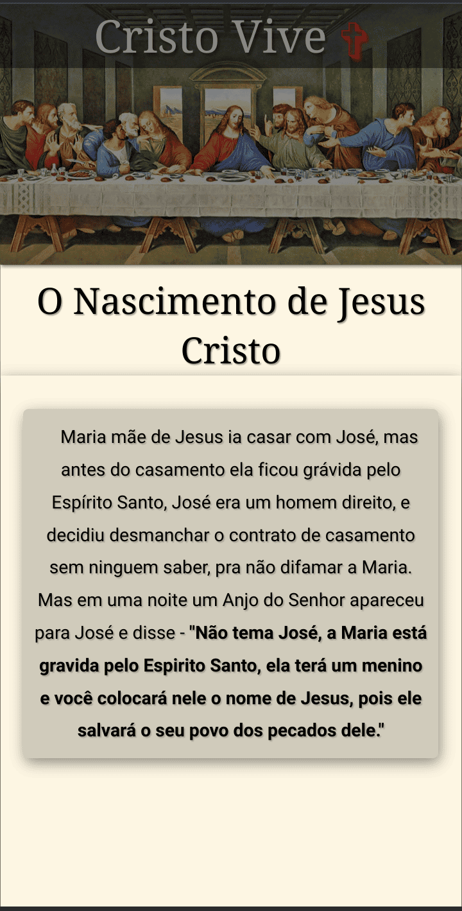

Site Cristo
Este projeto foi desenvolvido como um site informativo sobre a vida e ensinamentos de Jesus Cristo. O objetivo é oferecer uma navegação clara, conteúdo organizado e imagens impactantes, facilitando o acesso às informações para qualquer visitante.
O site conta com seções de estudos, histórias e testemunhos de fiéis, além de um design responsivo que se adapta a dispositivos móveis e desktops, garantindo uma experiência completa ao usuário.
